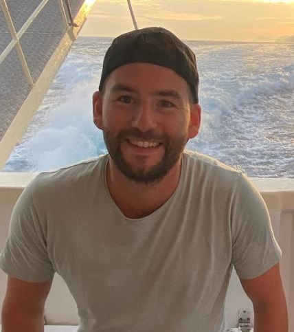
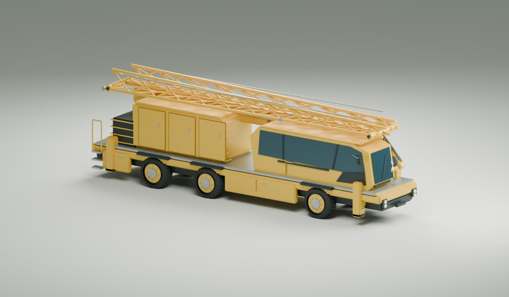

Software & controls
From mathematical models to software on a machine. Designing, simulating and testing controls for electric and hybrid powertrains.
ENGINEERING & TECHNICAL LEADERSHIP
I’m Maarten. I develop software and controls, guide technical decisions and help engineers grow. From the first system concept to a machine that works in practice.

MAARTEN’S WORKSHOP

A look at the engineering behind my work.
Industrial automation / Electric & hybrid powertrains / Technical leadership
01 / EXPERTISE
Good systems take more than good code. I connect technical depth with clear decisions and the people who deliver them.
From mathematical models to software on a machine. Designing, simulating and testing controls for electric and hybrid powertrains.
Understanding the need behind the technology. Translating architecture, feasibility and risk into scope, planning and coordination with engineers and suppliers.
Providing direction through knowledge and trust. Guiding engineers, sharing expertise and connecting software, electrical and mechanical disciplines.
02 / SELECTED WORK
Selected work across machines, production lines and my own software projects.
SPIERINGS MOBILE CRANES
From model to electric crane.
Control software for electric and hybrid mobile tower cranes, developed using Model-Based Design.
Enabling electric crane operation with controls that coordinate multiple energy sources and the crane’s power demand.
With the team, I developed and tested the eLift v1 control software. I also set up the toolchain that automatically translates Simulink models into PLC code.
From concept to production within one year, together with the team. The model-based approach provided a foundation for subsequent development.
SPIERINGS MOBILE CRANES
Technical depth. Shared direction.
Software development for machine control and the hybrid powertrain of a new generation of mobile tower cranes.
Integrating and extending existing eLift software for a new crane design, with attention to reliability and machinery safety.
As Lead Software Engineer, I guided the engineers and coordinated software development, planning, testing and releases.
Delivered the machine control and powertrain software for City-boy v2 with the team. Lessons from the project fed into further eLift development.
SPIERINGS MOBILE CRANES
Insight beyond the workshop.
Remote software updates and cloud data logging for cranes operating in the field.
Maintaining machines after delivery and analysing performance and faults remotely.
I introduced remote software updates and cloud data logging as part of software development at Spierings.
The ability to update software remotely and make operational data available for maintenance and fault analysis.
VAN DOREN ENGINEERS
A production line has to deliver every day.
PLC and SCADA projects in food, pharmaceuticals, water treatment and dairy. From functional design to commissioning.
Turning customer requirements into reliable controls for new and existing production environments.
Lead programmer for a new Coca-Cola production line, including CIP. At Kingspan Unidek, I extended a line and supported MES implementation for traceability.
Delivered and commissioned controls, extended production processes, and helped customers troubleshoot and improve their systems.
PERSONAL PROJECT / OPEN SOURCE
Making CAN data useful in .NET.
A C#/.NET port of the cantools library for CAN databases, messages and logs, with additional CANopen support.
Working with CAN data and database formats in a .NET environment.
An independent port of the existing Python library, supporting formats including DBC, KCD and SYM, alongside CANopen. Behaviour is checked against upstream tests and the Python implementation.
A public library and command-line tool for reading, encoding and decoding CAN data. Built on the work of the cantools community.
PERSONAL PROJECT / OPEN SOURCE
Making control logic visible.
A visual editor for designing, simulating and generating code from hierarchical state machines.
Clearly designing and exploring the states and transitions of a control system.
A visual software tool that brings design, simulation and code generation together in one workflow.
A public project for developing and simulating hierarchical state machines.
03 / ABOUT ME
I start with people and the process. Understand what is needed, then choose the solution. I make trade-offs explicit and bring engineers, suppliers and management together.
My route took me from electrical engineering to an MSc in Control Systems Engineering, combining work and study. At Spierings, I grew from software engineer to lead. A year of teaching at HAN made me more deliberate about sharing knowledge and helping others grow.
That drive to build goes beyond my work. I built my own house and develop software and technical projects out of curiosity.
“Everything I build — a crane, a team or a house — is only finished when it works without me.”
THE PATH SO FAR
Spierings Mobile Cranes
Technical proposals, system decisions and project coordination with engineers and suppliers.
HAN
Network theory, electronics and programming. Project and internship supervision.
Spierings Mobile Cranes
Guiding software engineers; development, validation and releases for electric and hybrid cranes.
Spierings Mobile Cranes
Crane controls, Model-Based Design and automatic PLC code generation.
Van Doren Engineers
Industrial automation, PLC/SCADA and commissioning.
Petrogas
PLC and SCADA applications for the energy and gas sector.
04 / CONTACT
About controls, electrification or developing an engineering team. Let’s connect.
Send me a message